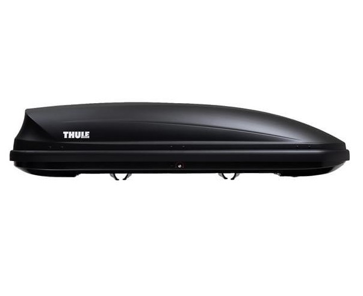

Dostępny sprzęt na wynajem
Wybierz interesujący Cię przedmiot, aby zobaczyć szczegóły i cenę

TurystykaBagażnik dachowy Thule Pacific 780
Pojemność 420L, obustronne otwieranie, szybki montaż FastGrip. Idealny na wakacje i narty.
Jak wygląda odbiór i dostawa?
Odbiór osobisty
Sprzęt odbierasz w Węgrzcach (tuż przy północnej granicy Krakowa, przy wjeździe od strony Al. 29 Listopada). Zapewniamy wygodne miejsce do załadunku oraz pomoc w montażu lub obsłudze.
* Dokładny adres podajemy przy potwierdzeniu rezerwacji.
Dostawa busem pod drzwi
Nie masz możliwości odbioru osobistego? Możemy dostarczyć zamówiony sprzęt na terenie Krakowa i okolicznych miejscowości.
* Koszt i termin dostawy ustalany indywidualnie telefonicznie.
Wynajem w 3 prostych krokach
Kontakt i Rezerwacja
Zadzwoń lub napisz na WhatsApp. Potwierdzimy dostępność sprzętu w wybranym przez Ciebie terminie.
Odbiór i Instruktaż
Odbierasz sprzęt w Węgrzcach lub przywozimy go do Ciebie. Spisujemy prostą umowę i wyjaśniamy działanie.
Zwrot i Rozliczenie
Po zakończeniu pracy oddajesz sprzęt, rozliczamy kaucję i gotowe!
Chcesz zarezerwować sprzęt?
Masz pytania dotyczące dostępności lub dostawy? Skontaktuj się z nami bezpośrednio!